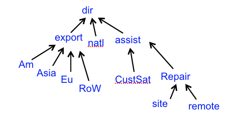
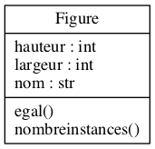

Suite du cours online
P. Buesser et A. Villa
Les slides verticaux contiennent des commentaires et additions sur un même slide. Vous pouvez y accédez avec les flèches de navigation
Niveau 1
Utiliser la barre d'espace pour naviguer à travers tout les slides.
Pressez la touche ESC pour avoir une vue générale des slides.
Niveau 3
- Des données du web peuvent être intégrées, il est donc possible que certains slides apparaissent différemment sans connection.
- Possible de copier-coller les sections de code sans problèmes de tabulations
Niveau 4
- Pour zoomer : maintenez alt (ctrl sous Linux)et cliquez sur un élément. Cliquez encore une fois pour revenir.
- Le texte contient des hyperliens vers des autres slides.
- Pour revenir après avoir cliqué sur un de ces liens, utilisez les flèches de navigation du browser (Firefox, etc).
Retour au slide principal.
3.16 – Destruction des instances
(slide 41 des anciennes slides)
La destruction d’une instance provoque
un appel au destructeur de la classe
| Le destructeur réalise le travail inverse du constructeur. En général, Python se débrouille très bien tout seul pour effacer automatiquement tout les objets inatteignables à l'aide du collecteur de déchets (garbage collector). |

3.16 – Destruction des instances: del
class Figure() :
compteur = 0
def __init__(self, largeur, hauteur) :
self.nom = ''
self.largeur = largeur
self.hauteur = hauteur
Figure.compteur += 1
def __del__(self) :
Figure.compteur -= 1
@staticmethod
def nombreinstances() :
return Figure.compteur
Notez aussi
3.16 – Destruction des instances: del
rect = Rectangle(4, 5)
del rect
3.16 – Destruction des instances: del
from figures import * # importe figures.py
print Figure.nombreinstances() # méthode de classe
#->0
rect = Rectangle(4, 5) # appel au constructeur
print rect.perimetre()
#->18.0
print Figure.nombreinstances()
#->1
cercle = Cercle(5) # appel au constructeur
cercle.perimetre() # polymorphisme :-)
#->31.4159265359
print Figure.nombreinstances()
#->2
del rect # appel au destructeur
print Figure.nombreinstances()
#->1
rect
#->NameError: name 'rect' is not defined
3.17 – Garbage collector : le ramasse-miette
Python gère la mémoire avec un garbage collector qui recycle automatiquement la mémoire qui n’est plus utilisée.
Périodiquement, le garbage collector (gc) vérifie le nombre de références pour chaque objet (variables, liste contenant l'objets etc.) et recycle les objets inaccessibles (recycle la mémoire de l'objet).
Utilisation explicite par le programmeur :
>>> import gc
>>> gc.collect()# retourne nbr objets inaccessibles et les efface
12
>>> gc.collect()
0
3.17 – Garbage collector : Exemple
Considérons la structure en arbre suivante (qui n’est pas une structure de classes), on veut la représenter à l’aide d’instances d’une seule classe:

L'arbre représente une hiérarchie de direction ou des secteurs dans une entreprise,
chaque noeud possède un noeud parent et plusieurs noeuds enfants. On va donc créer une classe
avec ces deux attributs : un noeud parent
Chaque noeud de l'arbre sera une instance de cette classe.
3.17 – Garbage collector : Exemple
La classe
class Niv():
compteur = 0
def __init__(self, nom):
self.nom = nom
self.sup = None #par défaut pas de supérieur
self.inf = [] #par défaut liste vide de subalternes
Niv.compteur += 1
@staticmethod
def nombreinstances() : return Niv.compteur
def addNiv(self, niveau):
niveau.sup = self
self.inf.append(niveau)
def organigramme(self):
for f in self.inf:
print self.nom, "dirige ", f.nom
f.organigramme()
- L'attribut
nom contient le nom du noeud (p. ex "dir"). - On déclare une méthode de classe pour compter les instances (avec
@staticmethod ) comme dans la classe Figure. - Ligne 12: la fonction
addNiv permet d'ajouter un élément dans la liste des enfants. Le parent de ce noeud enfant est donc le noeud qui rajoute cet enfant, représenté par la variableself (ligne 13)
- Ligne 16 : la méthode
organigramme permet d'afficher l'arbre par récurrence selon l'algorithme ci-dessous :
def organigramme(self):
parcours tout les enfant du noeud self:
imprime chaque enfant
pour chaque enfant rapelle organigramme()
- L'appel récursif permet d'afficher le sous arbre à partir d'un enfant.
3.17 – Garbage collector : Exemple
On peut maintenant créer les instances correspondant au schéma de l'arbre :
>>> pdg = Niv("dir")
>>> pdg.organigramme()
>>> pdg.addNiv(Niv("export"))
>>> pdg.addNiv(Niv("natl"))
>>> pdg.addNiv(Niv("assist"))
>>> print pdg.inf
[<__main__.Niv instance at 0x10a454ea8>, <__main__.Niv instance at 0x10a45a440>,
<__main__.Niv instance at 0x10a45a7a0>]
>>> pdg.organigramme()
dir dirige export
dir dirige natl
dir dirige assist
suite du code slide ci-dessous...
...suite
>>> pdg.inf[0].addNiv(Niv("Am"))
>>> pdg.inf[0].addNiv(Niv("Asia"))
>>> pdg.inf[0].addNiv(Niv("Eu"))
>>> pdg.inf[0].addNiv(Niv("RoW"))
>>> pdg.inf[2].addNiv(Niv("CustSat"))
>>> pdg.inf[2].addNiv(Niv("Repair"))
>>> pdg.inf[2].inf[1].addNiv(Niv("site"))
>>> pdg.inf[2].inf[1].addNiv(Niv("remote"))
>>> pdg.organigramme()
dir dirige export
export dirige Am
export dirige Asia
export dirige Eu
export dirige RoW
dir dirige natl
dir dirige assist
assist dirige CustSat
assist dirige Repair
Repair dirige site
Repair dirige remote
Explications :
- On créait le noeud racine de l'arbre
pdg = Niv("dir") - On rajoute les noeuds enfants de pdg avec des commandes du type :
pdg.addNiv(Niv("export")) - Pour chacun de ces enfants on rajoute leurs enfants. Par exemple
pdg.inf[0].addNiv(Niv("Am")) ajoute le noeud"Am" àpdg.inf[0] (le premier enfant depdg ). - On continue jusqu'à avoir créé tout l'arbre...
- Remarque : cette manière de construire l'arbre n'est pas très pratique, il serait plus facile de lire un fichier qui contient les informations de l'arbre de manière structurées
- Exercice : créez votre propre méthode d'affichage de l'arbre, ajoutez-la au code et testez-la. Utilisez le code des slides ou le code en lien ci-dessous.
- Lien vers le code complet Niv.py qui se trouve dans le dossier "codesPython/" des slides.
3.17 – Garbage collector : Exemple
On va tester le "garbage collector"
>>> import gc
>>> pdg.nombreinstances()
12
>>>
>>> pdg.inf[1].nom
'natl'
>>> del pdg.inf[1]
>>> print gc.collect(), "objets inatteignables"
0 objets inatteignables
>>> # parce que 'natl' n'avait pas de subalternes
>>> pdg.inf[1].nom
"assist"
>>> del pdg.inf[1]
#gc.collect efface les objets inatteignables et renvoie leur nombre
>>> print gc.collect(), "objets inatteignables"
15 objets inatteignables
# parce que 'assist' a été effacé avec la liste des subalternes par
#l'appel de gc.collect()
>>> print gc.collect(), "objets inatteignables"
0 objets inatteignables
- Ligne 1 : On importe le module gc
- Ligne 7 : On efface le deuxième enfant de "pdg", comme il ne possède pas d'enfant, aucun noeud ne sera rendu inatteignable
- Ligne 8 : la commande
gc.collect() force le recyclage de la mémoire et renvoie le nombre d'objets qui étaient inatteignables. Il y en a 0. - Ligne 13 : Par contre si on efface un noeud qui possède des sous-noeuds
pdg.inf[1] , ces derniers ne seront plus atteignables.
- Ligne 15-16 : L'appel
print gc.collect() va bien afficher un certain nombre d'objets inatteignables : 15. - Les 15 objets inatteignables sont comptabilisés de manière compliquée (en prenant en compte les attributs).
- Un deuxième appel à
gc.collect() affiche bien zéro puisque l'appel précédent a forcé le "nettoyage" de la mémoire.
3.18 – Comparaison d'objets
Les comparaisons entre objets peuvent s'avérer compliquées, par défaut python compare les adresses mémoire.
Lorsqu'on déclare un objet:
Python crée une référence vers l'objet créé
3.18 – Comparaison d'objets
Deux objets

si les variables
Problème : comment déterminer
si le contenu de
3.18 – Comparaison d'objets
La notion d’égalité est différente de la notion d’identité
>>> figA = figB = Figure(3, 4)
>>> figC = Figure(3, 4)
>>>
>>> figA == figB # sont bien identiques (références)
True
>>>
>>> figA == figC # sont bien égaux (valeurs)
False # mais euh ?!
>>>
- Ligne 7 : La comparaison de deux objets différents renvoie la valeur
False car cela compare les deux adresses mémoire qui sont différentes. figA etfigC on les deux été construit à l'aide du constructeurFigure() et donc pour chacun un objet a été créé en mémoire. Alors quefigB est juste une copie de l'adresse defigA .
3.18 – Comparaison d'objets
Représentation de la mémoire après le code ci-dessous:
>>> figA = figB = Figure(3, 4)
>>> figC = Figure(3, 4)
3.18 – Comparaison d'objets
A priori ce résultat est embêtant ! La solution est de créer une méthode
class Figure():
def egal(self, autre):
if isinstance(autre, Figure) :
return self.nom==autre.nom \
and self.largeur==autre.largeur \
and self.hauteur==autre.hauteur
else:
return False
figA = figB = Figure(3, 4)
figC = Figure(3, 4)
figA == figC#-> False
figA.egal(figC) #->True
- La fonction
egal() compare tout les attributs des deux objets et renvoieTrue si ils sont tous égaux.
3.18 – Comparaison d'objets
Python permet la redéfinition des opérations de comparaison entre objets dans chaque classe.
| Opérateur | Méthode correspondante |
|---|---|
| < | __lt__(self, other) |
| <= | __le__(self, other) |
| == | __eq__(self, other) |
| != | __ne__(self, other) |
| >= | __ge__(self, other) |
| > | __gt__(self, other) |
3.18 – Comparaison d'objets
On peut
class Figure():
...
def __eq__(self, autre):
if isinstance(autre, Figure) :
return self.nom==autre.nom)\
and self.largeur==autre.largeur)\
and self.hauteur==autre.hauteur
else:
return False
figA = figB = Figure(3, 4)
figC = Figure(3, 4)
figA == figC #-> True (car appel à la fonction __eq__)
3.19 – Représentation textuelle
Imprimer un objet avec
figA = Rectangle(3,4)
print figA
#-> <__main__.Rectangle instance at 0x102b9d908>
On peut également surcharger la méthode d'implémentation standard
class Figure():
...
def __str__(self):
return self.nom + " de " + \
str(self.largeur) + " x " + str(self.hauteur)
figA = Rectangle(3,4)
str(figA)#-> 'Rectangle de 3 x 4'
print figA # print fait appel a str()
#->Rectangle de 3 x 4
3.20 – Exemple: module fraction.py
On va écrire un module appelé
A noter qu'il est trivial de considérer également le cas des fractions négatives, mais cela complique le code et n'amène rien de plus.
# -*- coding: utf-8 -*-
class Fraction():
# constructeur et attributs
def __init__(self, num = 0, den = 1):
self.num = num
if (den == 0):
erreur("Dénominateur nul") #fonction d'erreur
self.den = den
def __str__(self):
return str(self.num) + "/" + str(self.den)
-
On créer une classe
Fraction avec deux attrbuts: le numérateur et le dénominateur de la fraction :num etden . - Si le dénominateur est nul, on appelle une fonction
erreur pour afficher l'erreur. Cette fonction sera définie plus tard - On créait une fonction
__str__ pour afficher l'objet plus facilement.
Reveal.js
The HTML Presentation Framework
Created by Hakim El Hattab and contributors
Hello There
reveal.js enables you to create beautiful interactive slide decks using HTML. This presentation will show you examples of what it can do.
Vertical Slides
Slides can be nested inside of each other.
Use the Space key to navigate through all slides.
Basement Level 1
Nested slides are useful for adding additional detail underneath a high level horizontal slide.
Basement Level 2
That's it, time to go back up.
Slides
Not a coder? Not a problem. There's a fully-featured visual editor for authoring these, try it out at https://slides.com.
Point of View
Press ESC to enter the slide overview.
Hold down the alt key (ctrl in Linux) and click on any element to zoom towards it using zoom.js. Click again to zoom back out.
(NOTE: Use ctrl + click in Linux.)
Touch Optimized
Presentations look great on touch devices, like mobile phones and tablets. Simply swipe through your slides.
Fragments
Hit the next arrow...
... to step through ...
... a fragmented slide.
Fragment Styles
There's different types of fragments, like:
grow
shrink
fade-out
fade-right, up, down, left
fade-in-then-out
fade-in-then-semi-out
Highlight red blue green
Transition Styles
You can select from different transitions, like:
None -
Fade -
Slide -
Convex -
Concave -
Zoom
Themes
reveal.js comes with a few themes built in:
Black (default) -
White -
League -
Sky -
Beige -
Simple
Serif -
Blood -
Night -
Moon -
Solarized
Slide Backgrounds
Set data-background="#dddddd" on a slide to change the background color. All CSS color formats are supported.
Image Backgrounds
<section data-background="image.png">Tiled Backgrounds
<section data-background="image.png" data-background-repeat="repeat" data-background-size="100px">Video Backgrounds
<section data-background-video="video.mp4,video.webm">... and GIFs!
Background Transitions
Different background transitions are available via the backgroundTransition option. This one's called "zoom".
Reveal.configure({ backgroundTransition: 'zoom' })Background Transitions
You can override background transitions per-slide.
<section data-background-transition="zoom">Iframe Backgrounds
Since reveal.js runs on the web, you can easily embed other web content. Try interacting with the page in the background.
Pretty Code
import React, { useState } from 'react';
function Example() {
const [count, setCount] = useState(0);
return (
<div>
<p>You clicked {count} times</p>
<button onClick={() => setCount(count + 1)}>
Click me
</button>
</div>
);
}
Code syntax highlighting courtesy of highlight.js.
Marvelous List
- No order here
- Or here
- Or here
- Or here
Fantastic Ordered List
- One is smaller than...
- Two is smaller than...
- Three!
Tabular Tables
| Item | Value | Quantity |
|---|---|---|
| Apples | $1 | 7 |
| Lemonade | $2 | 18 |
| Bread | $3 | 2 |
Clever Quotes
These guys come in two forms, inline: The nice thing about standards is that there are so many to choose from
and block:
“For years there has been a theory that millions of monkeys typing at random on millions of typewriters would reproduce the entire works of Shakespeare. The Internet has proven this theory to be untrue.”
Intergalactic Interconnections
You can link between slides internally, like this.
Speaker View
There's a speaker view. It includes a timer, preview of the upcoming slide as well as your speaker notes.
Press the S key to try it out.
Export to PDF
Presentations can be exported to PDF, here's an example:
Global State
Set data-state="something" on a slide and "something"
will be added as a class to the document element when the slide is open. This lets you
apply broader style changes, like switching the page background.
State Events
Additionally custom events can be triggered on a per slide basis by binding to the data-state name.
Reveal.addEventListener( 'customevent', function() {
console.log( '"customevent" has fired' );
} );
Take a Moment
Press B or . on your keyboard to pause the presentation. This is helpful when you're on stage and want to take distracting slides off the screen.
Much more
- Right-to-left support
- Extensive JavaScript API
- Auto-progression
- Parallax backgrounds
- Custom keyboard bindings